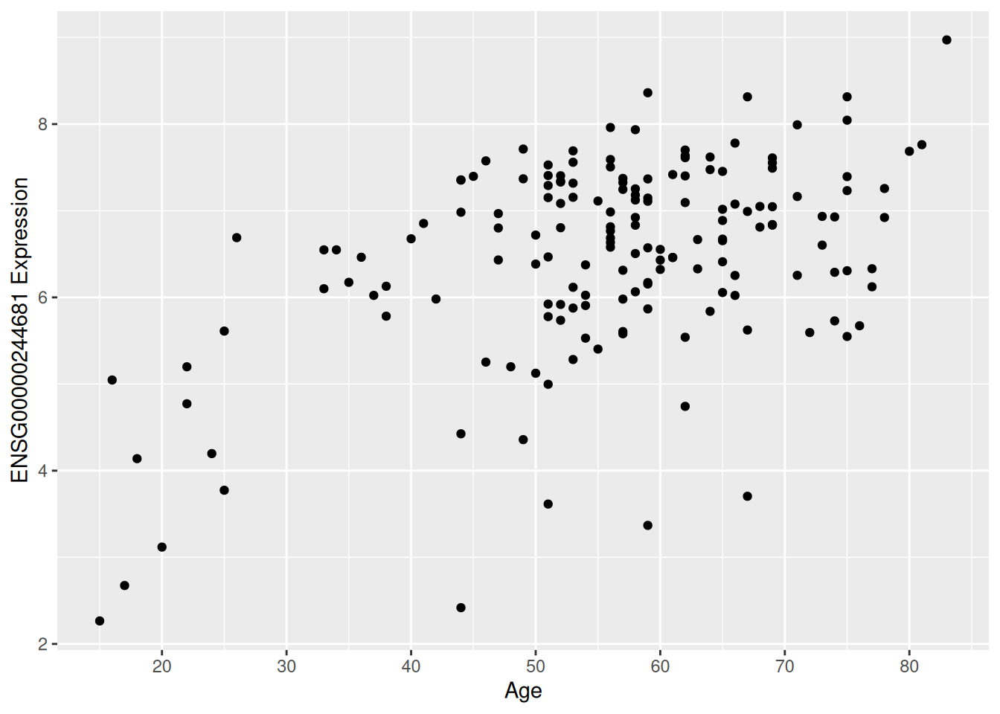
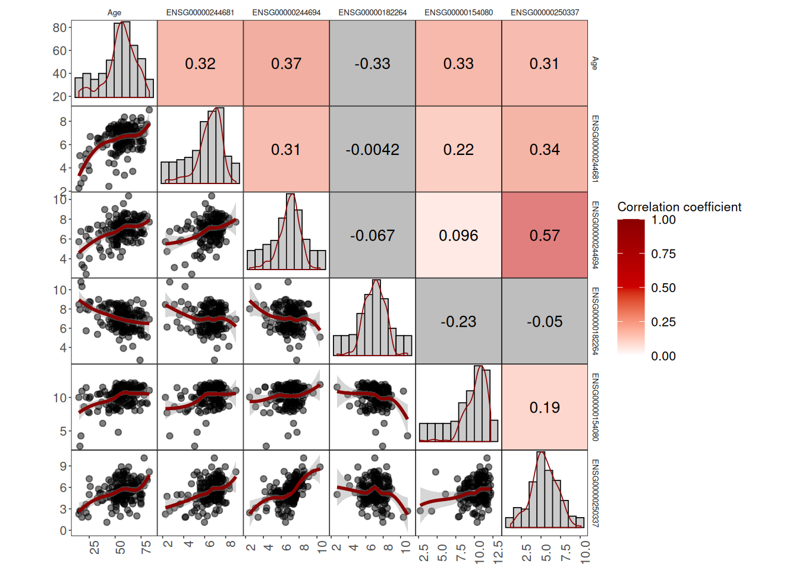
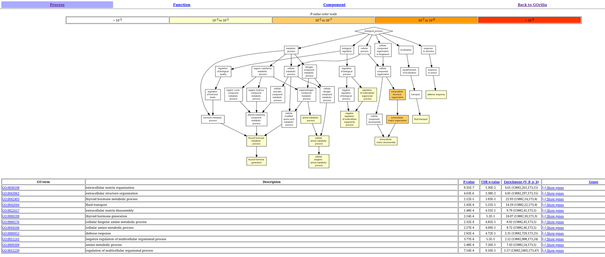

# Import libraries
library(ggplot2)
library(readr)
library(dplyr)
library(tibble)
library(reshape2)
library(conflicted)
library(tidyr)
library(purrr)
library(limma)
library(edgeR)
library(corrmorant)2 Week4 - Introduction to Gene expression analysis part 2
This R script serves as a scaffold for adding the code required to fulfill the assignments. It includes the assignments as well as a few hints.
Add the necessary code and type your answers in this document for your own record.
2.1 Assignment 3: Data exploration on the gene level
2.1.1 Convert the CPM values to FPKM values. For some of the exercises below, we need to convert the CPM expression values to FPKM expression values.
# Load data
geneTotExonLengths <- read_delim("Data/MAGNET_exonLengths.txt", delim = "\t")
gxData <- read_delim("Data/MAGNET_GeneExpressionData_CPM_19112020.txt", delim = "\t")
sampleInfo <- read_csv("Data/MAGNET_SampleData_18112022.csv")
# Add gene ID as the row names
gxData <- column_to_rownames(gxData, var = "EnsemblGeneID")
geneTotExonLengths <- column_to_rownames(geneTotExonLengths, var = "EnsemblGeneID")
# Check that row names are the same
all(rownames(geneTotExonLengths) == rownames(gxData)) # TRUE (just a check)[1] TRUE# Add sample name as the row names
sampleInfo <- column_to_rownames(sampleInfo, var = "sample_name")
# Convert CPM expression values to FPKM
cpm2fpkm <- function(x) {
t <- 2^(x) * 1E3 / geneTotExonLengths[, 1] # . before variable makes it a hidden variable
}
gxData_fpkm <- cpm2fpkm(gxData)2.1.2 What does FPKM stand for? How does this measure differ from CPM? (Google)
These metrics attempt to normalize for sequencing depth and gene length. Normalized expression units are necessary to remove technical biases in sequenced data such as depth of sequencing and gene length, and make gene expressions directly comparable within and across samples. More sequencing depth produces more read count for a gene expressed at the same level and differences in gene length generate unequal reads count for genes expressed at the same level.
CPM is a basic gene expression unit that normalizes only for sequencing depth (depth-normalized counts). It is biased in some applications where the gene length influences gene expression, such as RNA-seq.
\[\begin{equation}{} CPM = \frac{N \;reads \;mapped \;to \;gene \times 10^{6}}{Total \;N \;of \;mapped \;reads} \end{equation}\]RPKM (reads per kilobase of transcript per million reads mapped) is a gene expression unit that measures the expression levels (mRNA abundance) of genes or transcripts. RPKM is a gene length normalized expression unit that is used for identifying the differentially expressed genes by comparing the RPKM values between different experimental conditions. Generally, the higher the RPKM of a gene, the higher the expression of that gene.
\[\begin{equation}{} RPKM = \frac{N \;reads \;mapped \;to \;gene \times 10^{3} \times 10^{6}}{Total \;N \;of \;mapped \;reads \times gene \;length \;in \;bp} \end{equation}\]Here, 10^3 normalizes for gene length and 10^6 for sequencing depth factor.
FPKM (fragments per kilobase of exon per million mapped fragments) is a gene expression unit which is analogous to RPKM. FPKM is used especially for normalizing counts for paired-end RNA-seq data in which two (left and right) reads are sequenced from the same DNA fragment. Generally, the higher the FPKM of a gene, the higher the expression of that gene.
When we map paired-end data, both reads or only one read with high quality from a fragment can map to reference sequence. To avoid confusion or multiple counting, the fragments to which both or single read mapped are counted and represented for FPKM calculation.
2.1.3 In you own words, describe what the code above does.
The code takes the gene expression values in CPM and normalize them by the length of the genes, according to the formula expressed before.
2.1.4 Can we compare the FPKM value of gene A between two samples to state in which sample gene A is more highly expressed?
No, because FPKM values are normalized by the length of genes, which means that we cannot compare the values across different samples.
2.1.5 Can we compare the FPKM value of gene A to gene B in a single sample to state which gene is more highly expressed?
Yes, because FPKM values are normalized by the length of the genes.
2.1.6 Can we compare the CPM values of gene A between two samples to determine in which sample gene A is more highly expressed?
Yes, because CPM values are normalized by the sequencing depth (depth-normalized counts) and they do not take into account the length of genes for the normalization process.
2.1.7 Can we compare the CPM value of gene A to the value of gene B in a single sample to determine which gene is more highly expressed?
No, because CPM values are not normalized by the length of the genes.
2.1.8 Using the FPKM values, answer the following questions:
2.1.8.1 What are the IDs of the 5 highest expressed genes? What is their function according to the GeneCards website?
# Create a column with the mean of expression values of all samples
exp_mean_df <- gxData_fpkm %>%
rownames_to_column(var = "geneID") %>%
rowwise() %>%
mutate(exp_mean = mean(c_across(C00039:P01640))) %>%
column_to_rownames(var = "geneID") %>%
select(exp_mean)# Select the 5 most expressed genes
max5_genes_mean <- exp_mean_df %>%
slice_max(n= 5, exp_mean)| Gene ID | Name | Function |
|---|---|---|
| ENSG00000198804 | MT-CO1 | Contributes to cytochrome-c oxidase activity |
| ENSG00000198899 | MT-ATP6 | Contributes to proton-transporting ATP synthase activity |
| ENSG00000198938 | MT-CO3 | Involved in respiratory chain complex IV assembly |
| ENSG00000198712 | MT-CO2 | Contributes to cytochrome-c oxidase activity |
| ENSG00000198886 | MT-ND4 | Enables NADH dehydrogenase (ubiquinone) activity |
All of the genes are involved in processes related to mitochondria activity, which make sense because the dataset has muscle samples.
2.1.8.2 What are the IDs of the 5 lowest expressed genes? What is their function according to the GeneCards website?
# Select the 5 lowest expressed genes
min5_genes_mean <- exp_mean_df %>%
slice_min(n = 5, exp_mean)| Gene ID | Name | Function |
|---|---|---|
| ENSG00000015568 | RGPD5 | RAN is a small GTP-binding protein of the RAS superfamily that is associated with the nuclear membrane |
| ENSG00000162105 | SHANK2 | This gene encodes a protein that is a member of the Shank family of synaptic proteins that may function as molecular scaffolds in the postsynaptic density of excitatory synapses |
| ENSG00000267586 | LINC00907 | RNA Gene, and is affiliated with the lncRNA class |
| ENSG00000215126 | ZNG1F | Predicted to enable ATP binding activity |
| ENSG00000183914 | DNAH2 | Dyneins are microtubule-associated motor protein complexes |
There are pseudogenes, RNA genes, and others related to different processes (i.e. synaptic genes).
2.1.8.3 What are the IDs of the 5 most variable genes? What is their function according to the GeneCards website?
# Create a column with the mean of expression values of all samples
exp_var_df <- gxData %>%
rownames_to_column(var = "geneID") %>%
rowwise() %>%
mutate(exp_var = var(c_across(C00039:P01640))) %>%
column_to_rownames(var = "geneID") %>%
select(exp_var)# Select the 5 most variable genes
max5_genes_var <- exp_var_df %>%
slice_max(n= 5, exp_var)| Gene ID | Name | Function |
|---|---|---|
| ENSG00000198692 | EIF1AY | Eukaryotic Translation Initiation Factor 1A Y-Linked |
| ENSG00000129824 | RPS4Y1 | Ribosomal Protein S4 Y-Linked 1 |
| ENSG00000114374 | USP9Y | Ubiquitin Specific Peptidase 9 Y-Linked |
| ENSG00000067048 | DDX3Y | DEAD-Box Helicase 3 Y-Linked |
| ENSG00000012817 | KDM5D | Lysine Demethylase 5D - encodes a protein containing zinc finger domains |
4 of these genes are related to Y chromosome, which are absent in the female samples.
Note: By using the FPKM dataset, we got the same genes as the 5 mots highly expressed.
2.1.8.3.1 What are the IDs of the 5 least variable (= stable!) genes? What is their function according to the GeneCards website?
# Select the 5 least variable genes
min5_genes_var <- exp_var_df %>%
slice_min(n= 5, exp_var)| Gene ID | Name | Function |
|---|---|---|
| ENSG00000136709 | WD Repeat Domain 33 | WD repeats are conserved regions, which may facilitate formation of heterotrimeric or multiprotein complexes |
| ENSG00000089053 | ANAPC5 | Anaphase Promoting Complex Subunit 5 |
| ENSG00000111361 | EIF2B1 | Eukaryotic Translation Initiation Factor 2B Subunit Alpha |
| ENSG00000086475 | SEPHS1 | Selenophosphate Synthetase 1 |
| ENSG00000106609 | TMEM248 | Transmembrane Protein 248 |
All of the genes are related to conserved cellular functions - house keeping genes.
2.1.9 Using the CPM values, answer the following questions:
2.1.9.1 Which 5 genes show the strongest correlation to age in the control group?
# Get the dataframe with the list of sample names with NF
NF_columns <- rownames_to_column(sampleInfo, var = "sample") %>%
dplyr::filter(etiology == "NF") %>%
dplyr::select(sample) %>%
pull(sample)
# Get the gene expression data from the NF patients
NF_data <- gxData %>%
dplyr::select(NF_columns)
# Transpose the dataframe to have genes as columns
NF_data <- as.data.frame(t(NF_data))
# Get the metadata from NF patients
t_sampleInfo <- as.data.frame(t(sampleInfo))
NF_metadata <- t_sampleInfo %>%
rownames_to_column(var = "covariate") %>%
dplyr::select(c(NF_columns, covariate)) %>%
column_to_rownames(var = "covariate")
# Transpose the dataframe to have age as column
NF_metadata <- as.data.frame(t(NF_metadata))
# Add age column into the gene expression dataframe
NF_data <- NF_data %>%
mutate(age = NF_metadata$age)# Calculate correlation values
data_cor <- cor(NF_data[ , colnames(NF_data) != "age"],
as.numeric(NF_data$age))
data_cor <- as.data.frame(data_cor)
# Select the 5 most correlated genes with age in the control group
corr5_genes_age <- data_cor %>%
arrange(desc(abs(V1))) %>%
slice_head(n= 5)
# Get the gene expression data
corr5_gene_data <- NF_data %>%
dplyr::select(row.names(corr5_genes_age))
# Calculate significance (p value) of the 5 most correlated genes with age
corr5_genes_age[1,2] <- cor.test(corr5_gene_data$ENSG00000244681, as.numeric(NF_data$age))$p.value
corr5_genes_age[2,2] <- cor.test(corr5_gene_data$ENSG00000244694, as.numeric(NF_data$age))$p.value
corr5_genes_age[3,2] <- cor.test(corr5_gene_data$ENSG00000182264, as.numeric(NF_data$age))$p.value
corr5_genes_age[4,2] <- cor.test(corr5_gene_data$ENSG00000154080, as.numeric(NF_data$age))$p.value
corr5_genes_age[5,2] <- cor.test(corr5_gene_data$ENSG00000250337, as.numeric(NF_data$age))$p.value
colnames(corr5_genes_age) <- c("estimate", "p_value")- Is the correlation positive or negative?
4 of the values are positive and one is negative
- Is the correlation significant?
Yes, all of the correlations were significant
2.1.9.2 What is their function according to the GeneCards website? Are they genes of which the expression is known to change with age (use Pubmed)?
| Gene ID | Name | Function |
|---|---|---|
| ENSG00000244681 | MTHFD2P1 | Pseudogene |
| ENSG00000244694 | PTCHD4 | Predicted to be integral component of membrane |
| ENSG00000182264 | IZUMO1 | The sperm-specific protein Izumo is essential for sperm-egg plasma membrane binding and fusion |
| ENSG00000154080 | CHST9 | Catalyzes the transfer of sulfate to position 4 of non-reducing N-acetylgalactosamine (GalNAc) residues in both N-glycans and O-glycans |
| ENSG00000250337 | PURPL | RNA Gene, and is affiliated with the lncRNA class. Diseases associated with colorectal cancer and myasthenic syndrome |
2.1.9.3 Visualize the result for at least 1 gene (HINT: CPM values on the y-axis, age in years on the x-axis)
Scatter plot of one gene vs age
# Add age column into the 5 most correlated genes dataframe
corr5_gene_data <- corr5_gene_data %>%
mutate(Age = as.numeric(NF_metadata$age), .before = 1)
corr1gene_age <- corr5_gene_data %>%
select(Age, ENSG00000244681)
corr1gene_age_plot <- ggplot(corr1gene_age, aes(x = Age, y = ENSG00000244681)) +
geom_point() +
labs(x = "Age", y = "ENSG00000244681 Expression") +
scale_x_continuous(n.breaks = 10.0)
corr1gene_age_plot
Scatter plots, correlation values, and distributions of all genes and age
corr_plot_allgenes <- ggcorrm(data = corr5_gene_data) +
theme_corrm(base_size = 6) +
theme(axis.text.x = element_text(angle = 90, size = 8),
axis.text.y = element_text(size = 8),
strip.text.x = element_text(size = 5),
strip.text.y = element_text(size = 5),
legend.text = element_text(size = 8),
legend.title = element_text(size = 8)) +
lotri(geom_point(alpha = 0.5)) +
lotri(geom_smooth(colour = "red4")) +
utri_heatmap(alpha = 0.5, corr_method = "spearman") +
utri_corrtext(corr_method = "spearman", size = 3.5) +
dia_histogram(lower = 0.1, fill = "grey80", color = 1) +
dia_density(lower = 0.1, alpha = .1, colour = "red4") +
scale_fill_gradient2(low = "white", mid = "red3", high = "red4",
midpoint = 0.5, space = "rgb",
guide = guide_colorbar(title = "Correlation coefficient"),
limits = c(0, 1))
corr_plot_allgenes
2.2 Assignment 4: Differential gene expression analysis.
Now that we have explored the gene expression data, it is time to perform a differential gene expression analysis.
2.2.1 What is differential gene expression analysis (DGEA)? What are some of the most common packages in R for DGEA?
Differential expression analysis means taking the normalised read count data and performing statistical analysis to discover quantitative changes in
expression levels between experimental groups.
R packages:
We are going to use the limma package to perform a DGEA. We need to use the CPM normalized values. Have a look at the limma guide section 15.4: (https://www.bioconductor.org/packages/devel/bioc/vignettes/limma/inst/doc/usersguide.pdf)
2.2.2 Implement the steps noted in the limma guide for the MAGNET dataset. Start with a DGEA between DCM patients and healthy controls.
2.2.2.1 Limma-trend
# Convert counts to logCPM values
logCPM <- cpm(gxData, log = TRUE, prior.count = 3)
# Create design matrix
design = model.matrix(~0 + sampleInfo$etiology)
# Apply limma pipeline
fit <- lmFit(logCPM, design)
fit <- eBayes(fit, trend = TRUE)
topTable(fit, coef = ncol(design)) logFC AveExpr t P.Value adj.P.Val B
ENSG00000089053 6.381604 6.384943 961.3848 0 0 1415.207
ENSG00000129351 6.429434 6.416465 955.8661 0 0 1413.270
ENSG00000105323 6.380228 6.365844 944.4249 0 0 1409.213
ENSG00000136709 6.329745 6.324768 937.9541 0 0 1406.892
ENSG00000106609 6.348231 6.340574 921.1237 0 0 1400.769
ENSG00000176915 6.281051 6.282988 907.5412 0 0 1395.732
ENSG00000075785 6.481443 6.478184 898.0510 0 0 1392.161
ENSG00000100711 6.284988 6.278731 891.0022 0 0 1389.480
ENSG00000182944 6.459927 6.446393 890.8330 0 0 1389.416
ENSG00000113648 6.404155 6.400461 890.3165 0 0 1389.218# Give more weight to fold-changes in the gene ranking
fit <- lmFit(logCPM, design)
fit <- treat(fit, lfc = log2(1.2), trend = TRUE)
topTreat(fit, coef = ncol(design)) logFC AveExpr t P.Value adj.P.Val
ENSG00000000003 6.117085 6.111910 388.5360 0 0
ENSG00000000419 6.294569 6.292874 480.5645 0 0
ENSG00000000457 6.100006 6.111824 433.3020 0 0
ENSG00000000460 5.886348 5.887347 308.1765 0 0
ENSG00000000938 5.992674 6.059126 206.5199 0 0
ENSG00000000971 6.391421 6.392179 255.8019 0 0
ENSG00000001036 6.299640 6.308049 581.1499 0 0
ENSG00000001084 6.273295 6.255830 284.7585 0 0
ENSG00000001167 6.134147 6.122626 201.0493 0 0
ENSG00000001460 5.943226 5.954836 370.8629 0 0Results show the p value of 0 in some genes, which means that something is wrong.
2.2.3 Which co-variates should be taken along for correction? (confounding; see the “alcohol causes lung cancer” example from the lecture)
# Convert counts to logCPM values
logCPM <- cpm(gxData, log = TRUE, prior.count = 3)
# Create design matrix considering confounding variables
design = model.matrix(~0 + etiology + gender + age, data = sampleInfo)
# Apply limma pipeline with confounding variables
fit <- lmFit(logCPM, design)
cont.matrix <- makeContrasts(DCMvsControl = etiologyDCM - etiologyNF,
levels = design)
fit <- contrasts.fit(fit, cont.matrix)
efit <- eBayes(fit, trend = TRUE)
dgeRes <- topTable(efit, coef = 'DCMvsControl', number = nrow(gxData))
glimpse(dgeRes)Rows: 20,781
Columns: 6
$ logFC <dbl> 0.15831103, 0.33966098, 0.21263013, -0.44141913, 0.36628640,…
$ AveExpr <dbl> 6.286287, 5.952977, 6.101884, 6.022681, 6.049712, 6.371697, …
$ t <dbl> 29.01545, 27.11832, 25.18996, -25.06301, 24.77563, -24.26241…
$ P.Value <dbl> 7.851116e-97, 1.689807e-89, 7.264246e-82, 2.342191e-81, 3.33…
$ adj.P.Val <dbl> 1.631540e-92, 1.755794e-85, 5.031943e-78, 1.216827e-77, 1.38…
$ B <dbl> 210.1073, 193.3613, 175.9173, 174.7550, 172.1180, 167.3887, …After including the cofounding variables, the p values are not 0, which means that the cofounding variables are important for the analysis.
2.2.4 Copy the top 200 differentially expressed genes to for a quick GO enrichment analysis. Which processes are changed between DCM and controls? Do these processes make biological sense? (quick literature check!)
# Select the 200 most correlated genes with age in the control group
to200_corr_genes <- dgeRes %>%
slice_head(n = 200) %>%
rownames_to_column(var = "Gene_ID") %>%
select(Gene_ID)
# Select the names of all genes in the control group
all_corr_genes <- dgeRes %>%
rownames_to_column(var = "Gene_ID") %>%
select(Gene_ID)
# Export target list to csv file
write_csv(to200_corr_genes, "Outputs/to200_corr_genes.csv", col_names = FALSE)
# Export background list to csv file
write_csv(all_corr_genes, "Outputs/all_corr_genes.csv", col_names = FALSE)In the GOrilla server, the inputs are the target and background tables exported in the previous step. The results are shown in the following figure:

The results show that the most enriched GO terms are related to inflammation and structural processed, and the immune system, which is consistent with the literature.